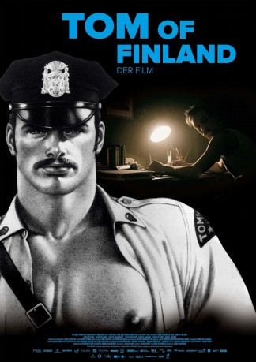

#8654 Tom of Finland
 
 IMDB-Wertung: 6.8 / 10
IMDB-Wertung: 6.8 / 10  Tomatometer: 83
Tomatometer: 83  Metascore: 56
Metascore: 56 
Dem Finnen Touko Laaksonen bringt seine Heimkehr von der Front des Zweiten Weltkriegs nicht den erhofften Frieden, denn er tauscht den einen Kriegsschauplatz lediglich gegen einen anderen ein: In seiner Heimat kann er seine Homosexualität nicht offen ausleben, sieht sich ständig der Gefahr von Denunziation und strafrechtlicher Verfolgung ausgesetzt. Selbst seiner Schwester Kaija offenbart Tom nicht, dass er schwul ist, seine Beziehung zum Tänzer Veli Mäkinen muss er geheim halten. Um seinen Gefühlen wenigstens auf künstlerische Art Ausdruck zu verleihen, beginnt er, homoerotische Bilder zu zeichnen. Unter dem Künstler-Pseudonym „Tom Of Finland“ gelangen diese Werke schließlich an die Öffentlichkeit, wo sie für schwule Männer weltweit zum Symbol ihrer Revolution werden. Biopic über den homosexuellen finnischen Künstler Touko Laaksonen, dessen Fetisch-Zeichnungen die Homosexuellen-Szene bis heute prägen und längst Kult sind.
Jahr: 2017
Dauer: 111 Minuten
FSK: 12
Land: Finnland Studio: MFA+ FilmdistributionTonspuren: DTS - ,
Untertitel: Deutsch,
Auflösung: 1080p (1920x808) Größe: 5181 MB
Genre: Drama, Biographie
Regisseur: Dome Karukoski
Drehbuch: Aleksi Bardy
Soundtrack: Lasse Enersen, Hildur Guðnadóttir
Darsteller:
- Pekka Strang als Tom / Touko
- Seumas F. Sargent als Doug
- Lauri Tilkanen als Veli
- Jessica Grabowsky als Kaija
- Siim Maaten als Russian Paratrooper
- Leif Edlund als Moustache Man
 Werner Daehn als Müller
Werner Daehn als Müller- Kari Hietalahti als Sahlin
- Christian Sandström als Kari
 Þorsteinn Bachmann als Editor
Þorsteinn Bachmann als Editor Jakob Oftebro als Jack
Jakob Oftebro als Jack- Jimmy Shaw als Police Officer in LA
- Matthew Way als Autograph Hunter / Tom's Man
 Haymon Maria Buttinger als Mannheim
Haymon Maria Buttinger als Mannheim- Eric Rusch als Presentator
- Jesse Fryckman als Touko's Family
- Jan Böhme als Tom's Man
- Erich Silva als Voice Actor
- Steven Stewart als Voice Actor
- Fredrik Johansson als Colleague (uncredited)
- Jan Lindwall als Businessman (uncredited)
- Chris Myland als Security Person
- Alf Myreen als AD Artist
- Fabian Puregger als Tom's Dream Cop
- Roope Karisto als Young Man
- Taisto Oksanen als Alijoki
- Emanuel Claesson als Man in Doorway
- Henri Keränen als Radio Operator / Soldier, Chorus
- Niko Wirtanen als Bouncer at Hansa Bar
- Jari Forsman als Police Officer in the Park
- Niklas Hogner als Kake
- Martin Bahne als Gabriel
- Ksenia Lelesh als Maria
- Norbert Braun als Border Guard
- Erwin Bruhn als Receptionist in Berlin
- Martin Bergmann als German Officer
- Thomas Olausson als Lone Police man
- Ida Koski als Heidi
- Paavo Pyykkönen als Juha
- Anders Sanzén als Mikael Berg
- Sten Sture Olander als Cobbler
- Pekka Immonen als Tailor
- Meri Nenonen als Mrs. Alijoki
- Jari Tolkki als Police Officer, Alijoki's House
- Frank Michael Jork als Photographer
- David Nolden als Young Doug
- C.T. Brauner als Doug's Father
- Margit Trennedal als Textile Seller
- Amelia Hoy als Nurse
- Manfred Böll als Zagat
Datei: X:\2017(N-Z)\Tom of Finland (2017, FSK12, 1920x808).mkv seit 13.04.2018
Festplatte: HD 2017(A-Z)-2018(A-F)
 Es gibt insgesamt 170 Filme in der Gruppe '2017(N-Z)'
Es gibt insgesamt 170 Filme in der Gruppe '2017(N-Z)'